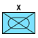
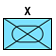
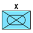

Звільнені території України
Тимчасово окуповані території України
Окуповані Придністров'я/Абхазія/Південна Осетія
Фортифікаційні споруди
Лінія фронту
Інфрастуктура
Зображення підрозділів
 

Шановне товариство!
AlphaMap - мапа яка не є офіційним джерелом інформації, яка ніяк не зв'язана з такими авторитетними джерелами як DeepState або United24. Важливо! Інформація про підрозділи береться з відкритих джерел: новини, телеграм-канали та інше. Мапою займається одна людина, мапа створена як проект з відкритим кодом на основі Leaflet яка працює на Github'і. Територія яка редагуються щонеділі може бути не точною, на даний час на мапі нема корисного функціоналу для більш глубокої інтерактивності, але над цим я буду працювати, дякую вам!
Фортифікаційні споруди
Лінія фронту
